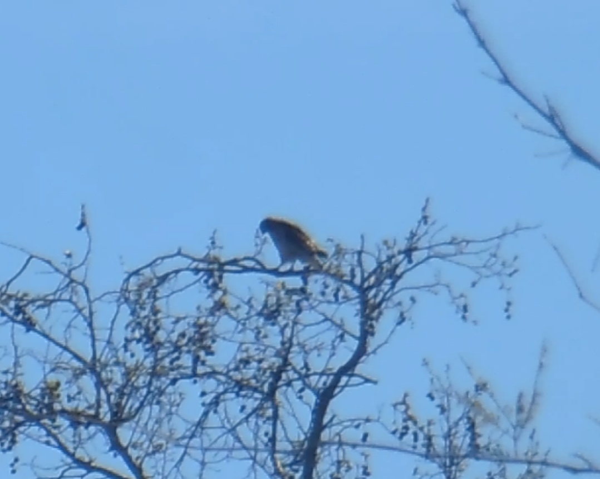
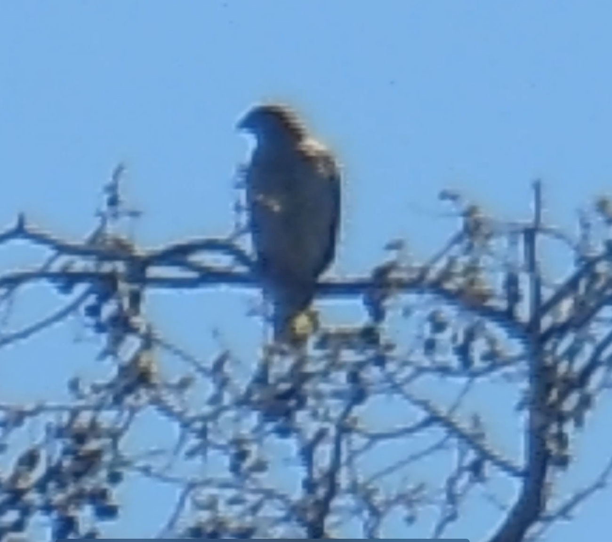
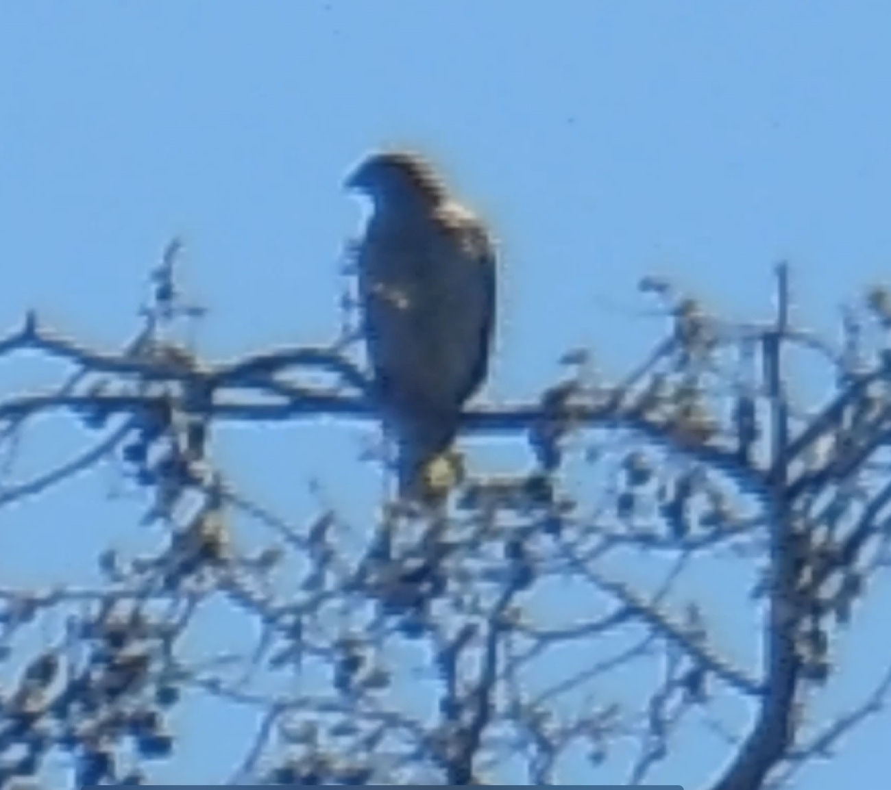
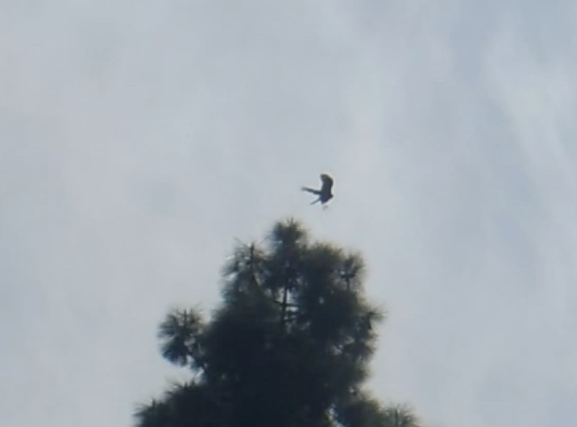

This is the sequel to Southern California Chaparral Wildlife by Ian Beardsley which documented the Wildlife that frequented a house in Claremont, California a Southern California Chaparral ecosystem from April 19, 2013 to March 7, 2019, a seven year period. Here we begin where we left off marking the beginning of this study with a Cooper’s hawk that appeared on March 15, 2019 at 11:58 AM. This Cooper’s hawk would seem be the offspring of the original one that began the first book on April 19, 2013 (Plate 01 that was erroneously described in the book as occurring on March 19 2013 in the introduction but correctly labeled in the photo) and appeared until October 6, 2016 (Plate 04), after which this offspring began appearing. And almost on a daily basis where previously they appeared one to three days a month.
Plates 22 Cooper's Hawk March 15 2019 11:58AM Looking South East From West Backyard
 


Plates 23 The Cooper's hawks March 18 2019 2:20 PM: in plate 23c there are actually
two hawks; one flying in the lower left and, one in the center behind the left branch
immediately off the central trunk with part of its body showing, however well blended
in with the color of the tree.


Plates 24 Hawk shows up March 19 2019 11:23 AM looking East from backyard in plate d we see a butterfly, in plate e there are two hawks; one flying on the left and the one in the pine pine tree, center, but not zoomed in like in the other photos.
Plates 25 Cooper’s Hawk in Sun March 20 2019 9:00 and 9:02 AM Look East From West Backyard.